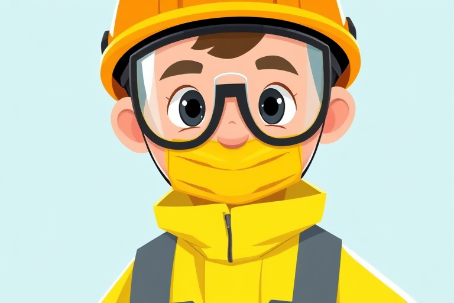

什么是PPE？ 
PPE 是 "Personal Protective Equipment" 的缩写，意指个人防护装备。它是指在工作或特定环境中，保护工作人员或工作人员免受伤害和疾病的装备。PPE包括以下内容：
- 头部保护：安全帽用于防止头部受到坠落物的伤害。
- 眼部保护：安全眼镜或护目镜，防止化学品、飞溅物、灰尘等对眼睛的伤害。
- 听力保护：耳塞或耳罩，减少噪音对听力的影响。
- 手部保护：手套，防止化学品、擦伤、高温等对手部的伤害。
- 身体保护：防护服，保护身体免受化学品、电击、火焰等的影响。
- 脚部保护：安全鞋，防止重物压伤和滑倒。